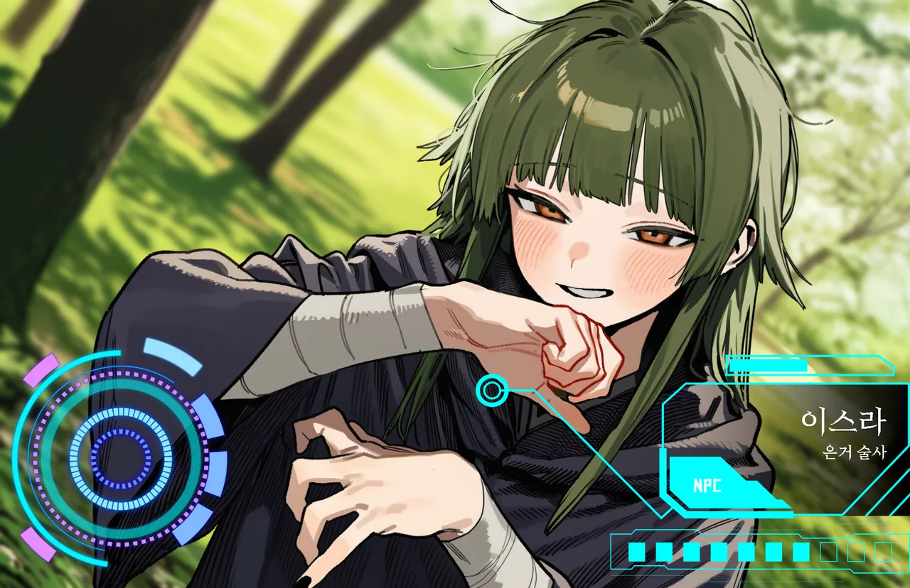

PROFILE
재와 글자를 새겨 거는 저주계 술식, 잿글. 제국이 금서로 지정했고 그녀가 유일한 전수자다. 배우면 카르시온 명성이 영구히 깎인다.
잿빛 회랑의 폐허 예배당에 혼자 산다. 회랑의 무법자들도 그 예배당에는 발을 들이지 않는다. 질문을 하면 질문으로 돌려주고, 그걸 버티는 자만 남긴다. 이방인의 '돌아옴'을 연구 재료처럼 흥미로워한다.
LOOK & VOICE외형과 말투
- 외형올리브 녹색 긴 머리, 호박색 눈, 검은 손톱, 먹물 번진 팔 붕대, 맨발
- 말투비꼬는 반존대. 상대를 "꼬마 이방인"이라 부르고 대답 대신 질문을 한다.
DATA
- 레벨Lv66
- 역할잿빛 회랑 은거 술사
- 소속잿빛 회랑 · 잿글 술식의 유일한 전수자
- 나이여 34
EXPRESSIONS표정 11종
